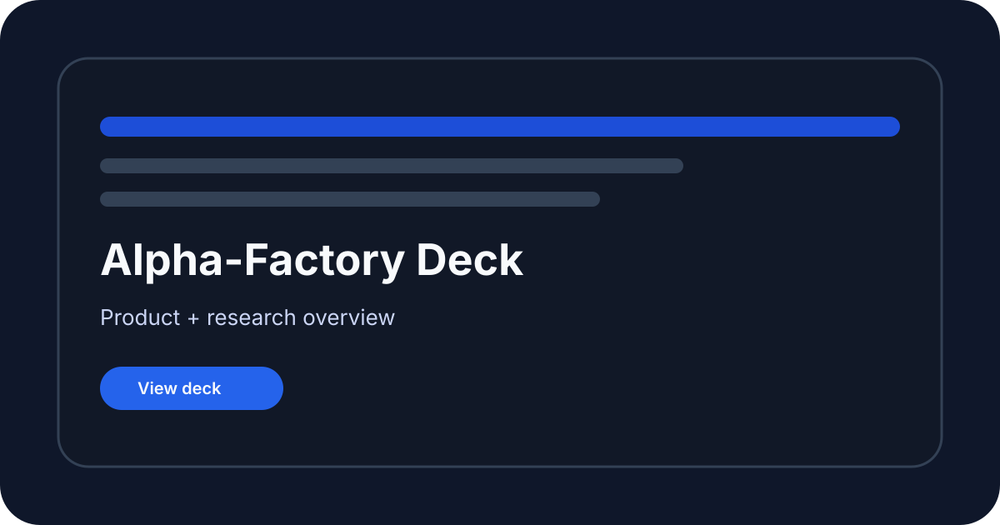

AI-GA meta-evolution
Research training: Evolves small networks in a curriculum environment.
Open demo and guide
Business v2
Local service: Runs planning, research and optional commentary agents in the legacy orchestrator.
Open demo and guide
Business v3
Simulation: Runs a bounded multi-agent business cycle with local fallback results.
Open demo and guide
Business v1
Offline sample: Ranks bundled business opportunities; service agents publish illustrative business events.
Open demo and guide
Insight v0
Offline simulation: Searches a toy sector-scoring landscape.
Open demo and guideInsight v1
Browser + simulation: Explores scenarios and Pareto search; optional browser GPT-2 performs real local text completion.
Open demo and guide
Marketplace
Local API client: Validates a bundled job and can submit it to a configured legacy orchestrator.
Open demo and guide
ASI world model
Research training: Explores generated grid worlds using a small learner and local API.
Open demo and guide
Super Planner
Interface illustration: Shows the stages and progress display of a planning interface.
Open demo and guide
Cross-industry discovery
Offline sample: Selects reproducible examples from the bundled opportunity catalog.
Open demo and guide
Era of Experience
Offline sample: Extracts simple signals from bundled historical CSV samples.
Open demo and guide
Finance Alpha
Deployment example: Provides paper-market agent and legacy service integration examples.
Open demo and guideGPT-2 CLI
Local model: Generates text with the actual GPT-2 124M model.
Open demo and guide
Macro Sentinel
Offline simulation: Computes Monte Carlo risk metrics from bundled macro samples.
Open demo and guide
Meta-Agentic v1
Synthetic evaluation: Runs provider-driven code proposals, synthetic fitness and SQLite lineage.
Open demo and guide
Meta-Agentic v2
Synthetic evaluation: Runs provider-driven code proposals, synthetic fitness and SQLite lineage.
Open demo and guide
Meta-Agentic v3
Identity curriculum: Exercises proposal, validation, scoring and persistent lineage on a fixed identity task.
Open demo and guideMeta-Agentic tree search
Offline simulation: Searches a small integer policy landscape.
Open demo and guide
MuZero planning
Research planning: Runs a small MuZero-style planner in a Gymnasium environment.
Open demo and guide
MuZero MCTS LLM concept
Deployment template: Preserves the original combined planning and model-integration concept.
Open demo and guide
OMNI smart city
Offline simulation: Runs bounded smart-city episodes with local accounting.
Open demo and guide
Presentation assets
Reference: Preserved slide deck and PDF for the original demo vision.
Open demo and guide
Repo-Healer
Bounded repair: Provides repository-specific triage and isolated repair evaluation.
Open demo and guide
Governance simulation
Offline simulation: Runs a bounded stochastic cooperation model.
Open demo and guide
Sovereign agent concept
Deployment template: Preserves the original wallet-gated agent deployment concept.
Open demo and guide
Shared demo utilities
Library: Shared notices and isolated demo code evaluation helpers.
Open demo and guide